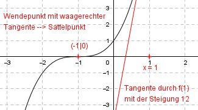

Aufgabe 48 Der Graph einer ganzrationalen Funktion 3. Grades hat einen Wendepunkt bei (-1|0), dort eine waagerechte Tangente, und seine Steigung an der Stelle x = 1 beträgt 12. Wie lautet seine Funktionsgleichung?  Allgemeine Form einer ganzrationalen Funktion 3. Grades: f(x) = ax3 + bx2 + cx + d f’(x) = 3ax2 + 2bx + c f’’(x) = 6ax + 2b 4 Bedingungen: 1. Hat einen Wendepunkt bei (-1|0) bedeutet zum einen: f’’(-1) = 0 --> 6a * (-1) + 2b = 0 --> -6a + 2b = 0 I 2. Hat einen Wendepunkt bei (-1|0) bedeutet zum anderen: f(-1) = 0 --> a * (-1)3 + b * (-1)2 + c * (-1) + d = 0 --> -a + b - c + d = 0 II 3. Hat dort eine waagerechte Tangente bedeutet, dort ist ein Sattelpunkt: f’(-1) = 0 --> 3a * (-1)2 + 2b * (-1) + c = 0 --> 3a - 2b + c = 0 III 4. Seine Steigung an der Stelle x = 1 gleich 12 bedeutet: f’(1) = 12 --> 3a * 12 + 2b * 1 + c = 12 --> 3a + 2b + c = 12 IV III * (-1) + IV -3a + 2b - c = 0 3a + 2b + c = 12 ----------------- 4b = 12 |:4 b = 3 b = 3 in I eingesetzt: -6a + 2 * 3 = 0 |+6a 6 = 6a |:6 a = 1 a = 1 und b = 3 in III eingesetzt: 3 * 1 - 2 * 3 + c = 0 3 - 6 + c = 0 -3 + c = 0|+3 c = 3 a = 1 und b = 3 und c = 3 in II eingesetzt: -1 + 3 - 3 + d = 0 -1 + d = 0 |+1 d = 1 Gesuchte Funktionsgleichung: f(x) = x3 + 3x2 + 3x + 1